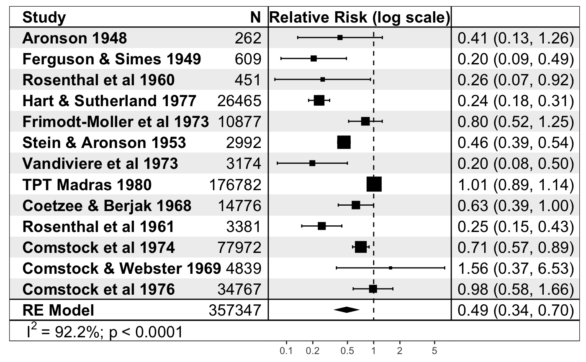
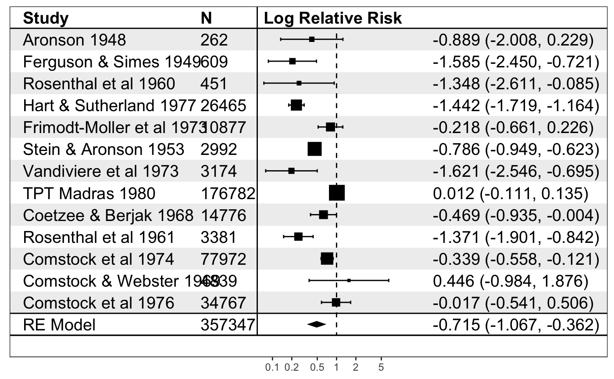

forest_rma.RdGenerate a forest plot from a meta-analysis
forest_rma( model, panels = NULL, study_labels = NULL, additional_data = NULL, point_size = NULL, model_label = NULL, show_individual_studies = TRUE, show_model = TRUE, show_stats = list(`I^2` = rlang::quo(sprintf("%0.1f%%", I2)), p = rlang::quo(format.pval(QEp, digits = 4, eps = 1e-04, scientific = 1))), trans = I, funcs = NULL, format_options = forest_model_format_options(), theme = theme_forest(), limits = NULL, breaks = NULL, return_data = FALSE, recalculate_width = TRUE, recalculate_height = TRUE )
| model | a single |
|---|---|
| panels |
|
| study_labels | a character vector of study labels or list of character vectors the same length as |
| additional_data | a |
| point_size | a numeric vector with the point sizes for the individual studies, or a single value used for all studies, or a list of numeric vectors if more than one model is to be plotted |
| model_label | a single model label or character vector of model labels the same length as |
| show_individual_studies | whether to show the individual studies (the default) or just the summary diamond |
| show_model | a logical value, if `TRUE`, show model result, otherwise only show forest plots for studies |
| show_stats | a |
| trans | an optional transform function used on the numeric data for plotting the axes |
| funcs | optional list of functions required for formatting |
| format_options | formatting options as a list as generated by |
| theme | theme to apply to the plot |
| limits | limits of the forest plot on the X-axis (taken as the range of the data by default) |
| breaks | breaks to appear on the X-axis (note these will be exponentiated
if |
| return_data | return the data to produce the plot as well as the plot itself |
| recalculate_width |
|
| recalculate_height |
|
plot
This produces a forest plot using the rma
if (require("metafor")) { data("dat.bcg") dat <- escalc(measure = "RR", ai = tpos, bi = tneg, ci = cpos, di = cneg, data = dat.bcg) model <- rma(yi, vi, data = dat) print(forest_rma(model, study_labels = paste(dat.bcg$author, dat.bcg$year), trans = exp )) print(forest_rma(model, panels = forest_panels( Study = ~study, N = ~n, ~vline, `Log Relative Risk` = ~ forest(line_x = 0), ~ spacer(space = 0.10), ~ sprintf("%0.3f (%0.3f, %0.3f)", estimate, conf.low, conf.high) ), study_labels = paste(dat.bcg$author, dat.bcg$year), trans = exp )) }#>#>#> #> #>#> Warning: Unable to resize forest panel to be smaller than its heading; consider a smaller text size#> Warning: Unable to resize forest panel to be smaller than its heading; consider a smaller text size